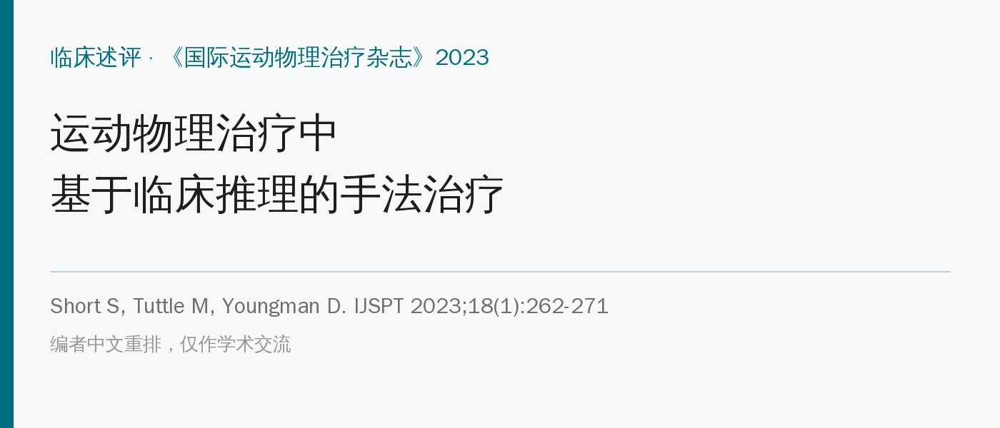
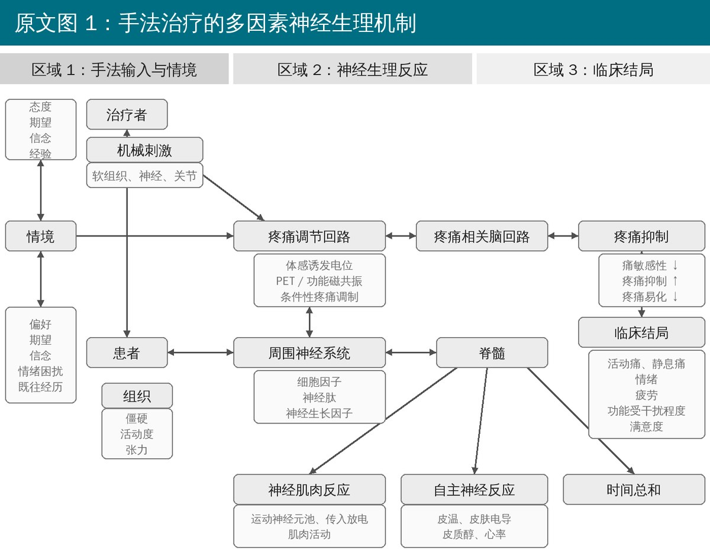
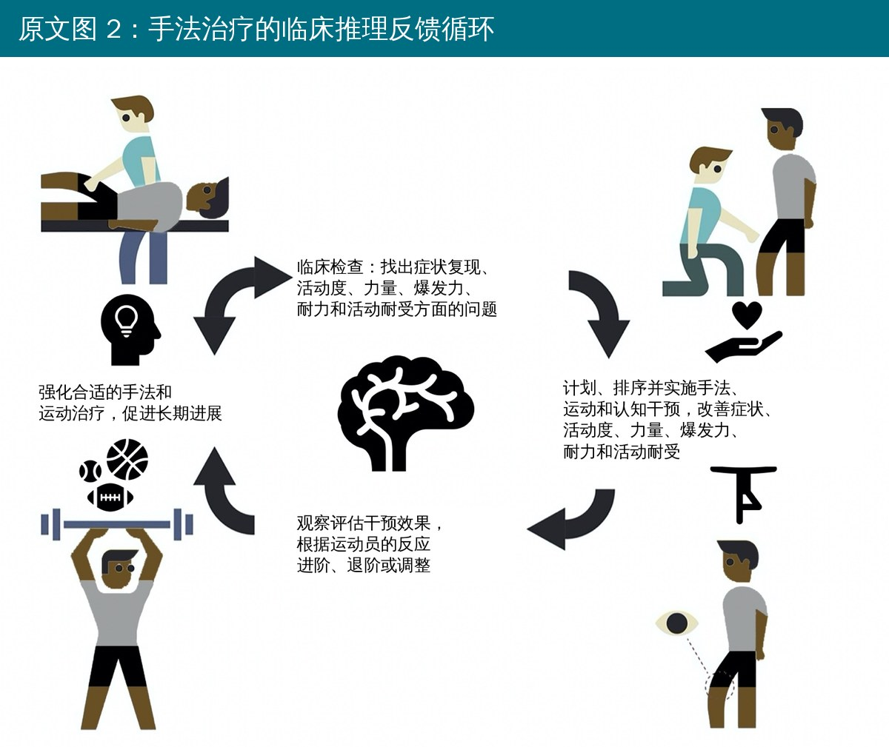
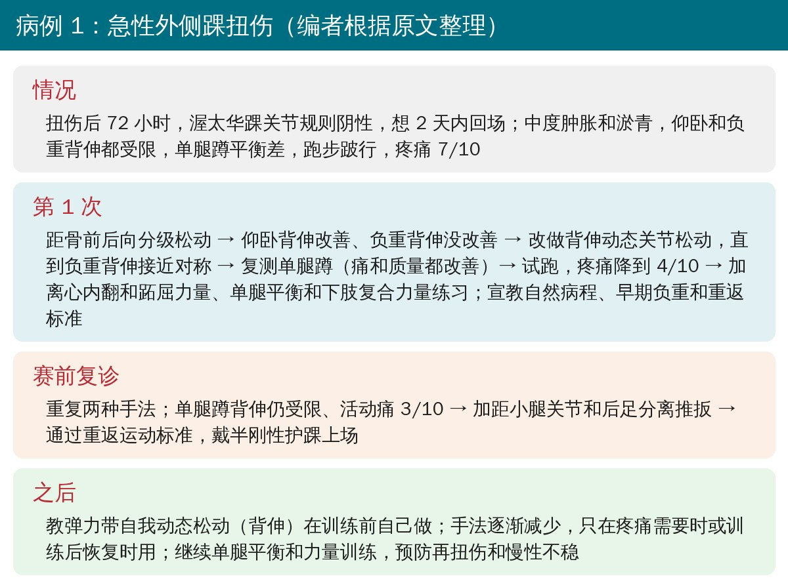
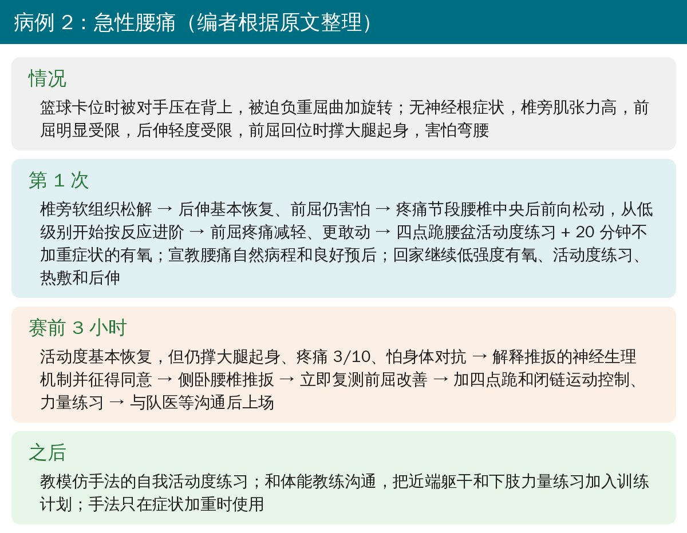

🔖原文信息（编者中文重排）
📚 文献信息
▪ Short S, Tuttle M, Youngman D. A clinically-reasoned approach to manual therapy in sports physical therapy. Int J Sports Phys Ther. 2023;18(1):262-271. doi:10.26603/001c.67936
▪ 作者分别来自 NBA 丹佛掘金队、MLS 纽约红牛队和瑞吉斯大学物理治疗学院
▪ 临床述评，证据等级 5 级（专家意见）
这些年治疗手段常被简单分成“主动”和“被动”两类：运动是主动的、值得推崇；手法被归为“被动”、低价值。但在运动队里，运动员每天本来就有大量训练负荷，光靠运动来处理疼痛有时行不通：已经疼的时候，运动不一定能带来止痛效果；慢性疼痛的人，运动诱发的镇痛作用也会减弱。
作者的立场是：手法不是主角，但在临床推理指导下，它是让运动员“动得起来”的安全、低成本工具，可以减少止痛药、影像检查和过度医疗。
• 短期止痛和改善症状，有 1、2 级随机对照研究支持
• 严重不良事件风险很低（包括颈椎推扳），低于很多药物，与运动、假治疗相当
• 早期做手法与更少的磁共振、止痛注射和阿片类药物使用相关
• 减轻疼痛和对受伤的焦虑，让运动和训练更好坚持
• 用“伤害性”语言：“骨盆歪了”“骶骨扭转”“关节错位”“粘连”“触发点”“半脱位”等说法，可靠性差、理论站不住，会让运动员产生不必要的恐惧和回避
• 对手法的生物力学机制过度解读，夸大技术的“精准性”和效果
• 让运动员依赖手法和某个治疗师，耽误正常训练，反而导致失训
• 研究里对手法的剂量、强度、技术描述普遍很少，效应量小、缺乏长期效果

🔖原文图 1：手法治疗的多因素神经生理机制（改编自 Bialosky 等，编者中文重绘）
现在的主流解释是：手法是一种机械刺激，传入脊髓后背角，引发一连串神经生理反应，包括神经肌肉（肌肉活动）、自主神经（心率、皮质醇）、内源性镇痛，以及非特异性因素（情境、信念、恐惧、期望）。不是“把关节推回去”，所以对运动员解释时要诚实：讲清楚手法能带来什么、不能带来什么。

🔖原文图 2：手法治疗的临床推理反馈循环（改编自 Rhon，英文已改为中文）
• 剂量没有标准答案：研究里固定的“处方式”手法和临床的灵活应用差别很大，这可能也是研究结果不一致的原因
• 看反应定剂量：如果运动员对手法有反应，剂量应以让具体症状（比如 7/10 的膝痛）出现有临床意义的改善为目标，并且和功能主诉挂钩（比如跳不起来）
• 治疗中反复复测功能动作（跑、跳、变向），判断手法是否有效、要不要换技术
• 队医环境的特殊之处：不受医保次数限制，运动员来得勤，更要防止“治疗过度”
• 逐步撤掉手法：用模仿手法的自我活动练习替代治疗师，最终过渡到主动运动，培养运动员的自主管理能力

🔖病例 1 的处理流程（编者根据原文整理）
• 先松动、再动态松动：距骨前后向分级松动只改善了仰卧背伸，于是换成背伸动态关节松动，直到负重背伸接近对称
• 每一步都复测：单腿蹲、跑步，疼痛从 7/10 降到 4/10
• 手法后马上接运动：离心内翻和跖屈、单腿平衡、下肢复合力量
• 赛前再加推扳：背伸仍受限时，做距小腿关节和后足分离推扳，通过 PAASS 重返标准（疼痛、踝关节损伤表现、运动员自我感受、感觉运动控制、专项功能表现）后戴护踝上场
• 之后：教弹力带自我动态松动替代手法，手法逐渐减少

🔖病例 2 的处理流程（编者根据原文整理）
• 先排除神经根问题：感觉、肌力正常，坍塌试验阴性
• 软组织 → 松动：椎旁软组织松解后后伸恢复；前屈仍害怕，就对疼痛节段做腰椎中央后前向松动，从低级别开始，按反应进阶
• 手法后接活动：四点跪腰盆活动度练习 + 20 分钟不加重症状的有氧；宣教腰痛预后良好
• 赛前推扳：前屈回位时仍要撑大腿、疼痛 3/10、怕对抗 → 讲清推扳的神经生理机制、征得同意后做侧卧腰椎推扳，立即复测并接运动控制练习，与队医沟通后上场
• 之后：自我活动练习替代手法，躯干和下肢力量纳入体能训练
两个病例的共同模式是：手法开路 → 立即复测 → 马上接运动 → 教自我练习 → 逐渐撤掉手法。
• 专家意见：证据等级 5 级，两个病例也是示范性的虚拟情景，不是真实疗效数据
• 立场明确：作者是职业队物理治疗师，文章的目的就是为手法“正名”，对其他理疗手段的评价相对严厉，对手法的证据则偏宽容
• “被临床指南一致支持”有拔高：多数指南对手法的推荐是“短期、联合运动使用”，强度有限
• 病例 1 的重返节奏偏激进：伤后第 5 天、有中度肿胀和淤青就上场比赛，更适合有队医全程跟进的职业环境，普通患者不宜照搬
• 解剖用词错误：病例 1 写“在胫腓关节上对距骨做前后向松动”，距骨是在距小腿关节（踝穴）上滑动，不是胫腓关节
• 一边反对、一边使用“被动”标签：文章开头说手法不是被动治疗、贴“被动”标签会贬低它，后文却多次把手法和其他“被动”疗法放在一起比较，还说“运动员一定会接受被动治疗，问题只是选哪种”
• 前后两句结论相反：先说手法“一贯”比电疗、贴扎等其他手段更有效，紧接着又说最近有研究认为手法的效果与理疗仪器等传统手段相当
• 缺乏依据的推论：说运动员就诊频繁、又不受医保限制，“进一步增强了手法的短期疗效”，就诊方便与疗效本身没有直接因果关系
• 术语借用：病例 2 中的“Gower 征”原本是神经肌肉疾病中近端肌无力的体征，腰痛评估中通常称为“异常运动”或“撑大腿起身”
• 版权声明自相矛盾：写的是“知识共享署名 4.0 国际许可（CC BY-NC 4.0）”，全称是 BY、缩写却是 BY-NC（非商业）
• 手法当“开路工具”，运动才是主线：每次手法后都要立即复测功能，并马上接上对应的主动练习
• 说话要“去恐惧化”：别说“错位、歪了、粘连”，用“让它动得更舒服、帮你降低敏感度”这类表述
• 剂量按反应调：先低级别，有效再进阶，无效就换技术或换思路
• 计划好撤离：把有效的手法变成自我练习（如弹力带动态松动），逐步减少对治疗师的依赖
• 比赛期的快速处理要有队医团队一起决策，普通患者的重返节奏要更保守
欢迎关注骨科康复小黄公众号，获取更多物理治疗的专业知识！
📄参考文献：
Short S, Tuttle M, Youngman D. A clinically-reasoned approach to manual therapy in sports physical therapy. Int J Sports Phys Ther. 2023;18(1):262-271. doi:10.26603/001c.67936
原文以 CC BY-NC 4.0 协议开放获取（仅限非商业使用）。本文为学术交流用的中文解读：图 1 为编者中文重绘，图 2 引自原文（英文文字改为中文），两张病例流程卡为编者根据原文整理绘制。版权归原作者与期刊，如有侵权请联系删除。